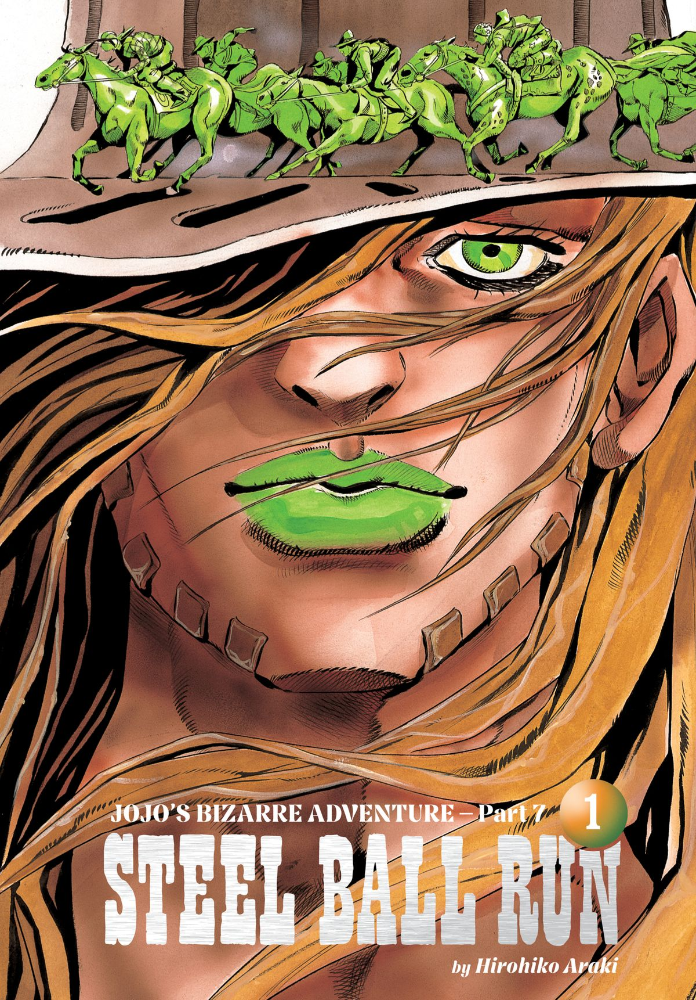

COMEÇA A STEEL BALL RUN
CONTAGEM REGRESSIVA PARA O INÍCIO DA CORRIDA
Artigo principal: Praia de San Diego (Arco da História)
Gyro Zeppeli e Johnny Joestar, os personagens principais da história.
Por defender a literatura inglesa, Sandman é forçado a fugir do deserto do Arizona, longe de seu povo. Misteriosamente, ele ultrapassa e escapa de seus perseguidores a cavalo graças a um poder enigmático . Sandman encontra sua irmã perto de um penhasco cuja parede está coberta de misteriosos buracos esféricos e conta a ela sobre sua intenção de participar da próxima corrida Steel Ball Run .
O promotor Steven Steel realiza uma coletiva de imprensa para anunciar a Steel Ball Run: uma corrida de cavalos em várias etapas pelos Estados Unidos, com um grande prêmio de US$ 50.000.000. Participantes do mundo todo acorrem aos Estados Unidos: entre os favoritos estão o cowboy Mountain Tim , o cavaleiro mongol Dot Han e o jóquei britânico Diego Brando . Até mesmo nomes relativamente desconhecidos, como o escravo liberto Pocoloco e Sandman, se inscrevem para participar da corrida.
Bola de aço giratória de Gyro
Gyro Zeppeli é apresentado ao registrar sua entrada. Ele desafia um ladrão para um duelo e, ao arremessar uma Bola de Aço em seu ombro, faz com que seu oponente atire na própria cabeça. Interessado, um espectador em uma cadeira de rodas toca a Bola de Aço enquanto ela gira em seu coldre, fazendo-o se levantar momentaneamente. O homem é apresentado como Johnny Joestar , um ex-jóquei genial que ficou paraplégico após uma briga banal.
Embora Johnny fique maravilhado com o milagre produzido pela Bola de Aço, Gyro se recusa a explicar seu segredo. Sem se deixar abalar, Johnny compra um cavalo e se inscreve na corrida. Quando a corrida começa, Johnny consegue montar em seu cavalo girando o próprio corpo.
OS PRIMEIROS QUINZE MIL METROS
Artigo principal: 1ª Etapa (Arco da História)
Gyro cruza a linha de chegada da primeira etapa.
Steven Steel e uma equipe de repórteres embarcam em um trem para acompanhar os competidores na primeira das nove etapas da corrida. Gyro rapidamente assume a liderança e incapacita dois dos favoritos do público, Urmd Avdul e Diego Brando, com o poder de suas Bolas de Aço. Gyro é então desafiado por Pocoloco, que compensa sua largada tardia com uma sorte incrível e uma habilidade peculiar . Apesar dos esforços de Gyro para atacar Pocoloco, ele só consegue colocar Sandman em perigo; mesmo assim, o nativo americano ultrapassa os dois e assume a liderança. Após uma batalha tensa perto da linha de chegada, Gyro transforma sua capa em uma vela para aproveitar o vento favorável e conquista o primeiro lugar por uma pequena margem.
INTERLÚDIO: O PASSADO DE STEVEN STEEL
Artigo principal: ~Como foi realizada a Steel Ball Run~
O passado fascinante de Steven Steel é explorado. É revelado que a corrida Steel Ball Run foi idealizada por uma jovem chamada Lucy , que sugeriu a ideia a um Steven abatido e desesperado. Após despertar de uma bebedeira, Steven foi abordado por um grupo de patrocinadores que demonstraram interesse no evento e se ofereceram para financiá-lo, tornando-o rico. Em gratidão a Lucy, Steven casou-se com ela posteriormente.
O OCIDENTE: PRIMEIRAS BATALHAS
UMA COMPETIÇÃO SANGUINÁRIA
Artigo principal: Através do Deserto do Arizona (Arco Narrativo)
Artigo principal: Os Foras da Lei Nascidos no Deserto (Arco de História)
Artigo principal: A Palma do Diabo (Arco da História)
Apesar de seu desempenho impressionante, Gyro recebe uma penalidade por ter colocado Sandman em perigo no início da corrida e é rebaixado para o 21º lugar. Depois de se vingar arruinando a festa de Steven, Gyro concorda em deixar Johnny segui-lo e lhe diz que o que importa é o giro da Bola de Aço . Enquanto isso, Steven e sua esposa são levados a uma cena de crime, indicando que um assassino está eliminando os competidores. O xerife local chama o famoso cowboy Mountain Tim , que memoriza as pegadas de ferradura e flerta brevemente com Lucy.
Começa a segunda etapa da Steel Ball Run. Desta vez, os competidores têm a missão de atravessar 1.200 km (750 milhas) de deserto. Gyro e Johnny são atacados pela competidora Sra. Robinson , que usa cactos explosivos para atormentá-los. Gyro derrota Robinson prontamente com os mesmos cactos. Mais tarde, depois de encontrar o cavalo da Sra. Robinson, Mountain Tim percebe que as ferraduras não combinam e que o assassino ainda está à solta.
Johnny e Gyro montam acampamento e Johnny avança um pouco no Spin. Os dois são então atacados por Andre , Benjamin e LA Boomboom , que empunham o Stand magnético compartilhado Tomb of the Boom . Após uma breve luta, Gyro e Johnny fogem, mas são atingidos pelo sangue de Andre. Benjamin se disfarça de Johnny Joestar, confronta Mountain Tim e consegue incriminar Johnny pelos assassinatos. Mountain Tim logo alcança Johnny e Gyro, e os três percebem que o inimigo ainda os está atacando. Tim apresenta seu poder, Oh! Lonesome Me , que ele chama de Stand . Ele revela que adquiriu esse poder ao entrar em uma Devil's Palm , um fenômeno em movimento que concede Stands às pessoas. Benjamin Boomboom usa seu Stand para imobilizar o grupo, mas Johnny desperta seu próprio Stand, Tusk : na verdade, o grupo havia entrado na Devil's Palm sem perceber. Johnny mata Benjamin e incapacita LA, que revela que eles foram contratados para matar Gyro e é prontamente deixado para morrer no deserto.
A MISSÃO DE GYRO E OYECOMOVA, O TERRORISTA
Artigo principal: O Destino de Gyro Zeppeli (Arco da História)
Artigo principal: O Terrorista de um País Distante (Arco Narrativo)
A pedido de Johnny, Gyro revela seu passado como carrasco do Reino de Nápoles . Em sua primeira execução, Gyro deveria decapitar Marco , um menino condenado à morte por mera associação com um lorde traidor. Após conhecer o garoto e testemunhar sua bondade, Gyro se opôs à execução de Marco e, assim, decidiu participar da corrida Steel Ball Run, pois a vitória poderia levar o rei napolitano a proclamar uma anistia geral e, de qualquer forma, o prêmio em dinheiro poderia custear o recurso de Marco.
Algum tempo depois, um terrorista do Reino de Nápoles chamado Oyecomova segue a dupla até uma vila remota, pronto para matar Gyro como um ato de desprezo contra o reino. Mountain Tim confronta Oyecomova, mas é incapacitado pelo Stand de Gyro, Boku no Rhythm wo Kiitekure , que expõe o terreno . O terrorista persegue Gyro e Johnny em direção às montanhas, tendo ouvido falar de um item de cura chamado Cavalo Zumbi em uma carta deixada por Gyro. Após uma longa perseguição rio acima, Johnny e Gyro incapacitam Oyecomova com um ataque combinado. Os dois alcançam o Cavalo Zumbi, que Gyro usa para curar uma lesão na perna que havia sofrido anteriormente.
O VERDADEIRO PROPÓSITO DA STEEL BALL RUN
Artigo principal: Presa (Arco da História)
Artigo principal: Monstros Assustadores (Arco da História)
O cobiçado cadáver do santo
Um flashback revela que José de Arimateia, o homem que desceu Jesus Cristo da cruz, mais tarde desenhou um mapa representando uma terra desconhecida e vários pontos de interesse.
Johnny e Gyro são atacados por Fritz von Stroheim , de quem se livram rapidamente. Johnny, confuso com a frequência das tentativas de assassinato, percebe repentinamente que seu braço esquerdo contém um braço mumificado. Enquanto isso, Steven Steel conversa com Funny Valentine , Presidente dos Estados Unidos. De posse do mapa de José de Arimateia, Valentine cobiça a relíquia dividida conhecida como o Cadáver do Santo . Lucy ouve por acaso o plano de Valentine para obter o Cadáver do Santo e vislumbra seu coração dentro do peito dele.
Pouco antes de chegarem ao Monument Valley, Johnny e Gyro são atacados por Pork Pie Hat Kid , um dos subordinados de Valentine . Pork Pie Hat Kid captura Gyro e isola Johnny, mas a Presa de Johnny se materializa completamente para ajudar seu usuário e sussurra a frase "movere crus" antes de desaparecer. Johnny, percebendo o verdadeiro propósito da Steel Ball Run, consegue alcançar Gyro e derrotar Pork Pie Hat Kid. Tendo visto suas pernas sendo influenciadas pela Presa, Johnny volta sua atenção para o Cadáver do Santo e convence Gyro a ajudá-lo a obtê-lo.
Durante o sprint final da segunda etapa, Johnny descobre a localização da próxima Parte do Cadáver em um jornal próximo, distraindo Gyro e fazendo com que Diego assuma o primeiro lugar. Gyro mal tem tempo de repreender Johnny antes que a corrida siga para sua terceira etapa: uma jornada de 510 km (320 milhas) pelas Montanhas Rochosas.
Gyro e Johnny encontram Diego e os três se abrigam em uma vila ao cair da noite. No entanto, Diego se transforma repentinamente em um raptor e ataca Gyro e Johnny, que são forçados a fugir ao descobrirem que toda a vila sofreu o mesmo destino. A história de Diego é revelada: ele passou sua juventude trabalhando em uma fazenda com sua mãe, mas o tratamento ruim que receberam e a morte dela tornaram Diego ambicioso e ressentido com a humanidade. Seu talento o levou a buscar a glória na Corrida da Bola de Aço. Enquanto Gyro começa a se transformar em um dinossauro, os dois conseguem localizar os Olhos do Cadáver, mas Diego rouba as Partes do Cadáver deles. Johnny, que permanece humano graças ao Braço Esquerdo do Cadáver, confronta o Dr. Ferdinand , que explica que seus Monstros Assustadores estão controlando o bando de dinossauros. Inesperadamente, Johnny abandona o Braço Esquerdo e se transforma parcialmente para jogar um dos Olhos em Gyro, que recupera a forma humana e adquire uma habilidade chamada Escanear . O Dr. Ferdinand fica incapacitado e é devorado por pumas, mas Diego escapa com o Olho Esquerdo e mantém suas habilidades de dinossauro.
Durante a reta final da terceira etapa, Gyro desafia Diego novamente. Johnny, que conhece Gyro há bastante tempo, declara que Gyro não tem a garra necessária para vencer e que perderá para Diego. Gyro repreende Johnny com raiva, mas Diego permanece à sua frente, apesar de seus melhores esforços. Johnny inesperadamente ultrapassa Diego e chega à linha de chegada, apenas para ser informado de que outro corredor, Hot Pants , já conquistou o primeiro lugar. Derrotado, Gyro admite que realmente lhe falta garra para vencer.
INTERLÚDIO: A HISTÓRIA DE FUNNY VALENTINE
Artigo principal: A história de F. Valentine
Um flashback revela parte do passado de Funny Valentine . Após sobreviver a uma viagem ao deserto, Valentine tornou-se político e descobriu o mapa de José de Arimateia. O mapa indicava a localização das nove partes do Cadáver do Santo : o Torso, o Coração, o Braço Esquerdo, o Braço Direito, a Coluna Vertebral, os Olhos, as Orelhas, as Pernas e a Cabeça. Após se tornar Presidente dos Estados Unidos, ele patrocinou a corrida de Steven Steele para remontar e apoderar-se do cadáver por completo.
MEIO-OESTE: LUTA PELO CORPO DO SANTO
O MUNDO DO HOMEM
Artigo principal: O Mundo do Homem (Arco Narrativo)
A quarta etapa da corrida é um percurso de 1.250 km (780 milhas) em direção a Kansas City. Em uma floresta ao longo da trilha, Gyro e Johnny encontram Hot Pants e lutam brevemente com ela por causa de uma vaca roubada. Usando o Scan na coluna de Hot Pants, Gyro decifra uma pista para a próxima parte do Cadáver; no entanto, o Cream Starter de Hot Pants, que espirra carne , quase mata ele e Johnny. Johnny revela que nem ele nem Gyro mataram a vaca, obrigando Hot Pants a ter misericórdia. Os três tentam continuar, mas se veem retornando repetidamente à mesma cabana. Um pistoleiro chamado Ringo Roadagain sai da cabana e apresenta seu Stand, Mandom , que pode retroceder o tempo em seis segundos. Um tiroteio acontece, no qual Johnny e Hot Pants aparentemente morrem, restando apenas Gyro vivo. Ringo arrasta o corpo de Johnny para dentro da cabana, mas Gyro percebe que o ferimento de Johnny não é fatal e decide confrontar o pistoleiro.
Um flashback revela que Ringo Roadagain era o filho caçula e doente de uma família pobre. Certa noite, sua mãe e irmã foram mortas por um bandido que tentou atacá-lo, forçando-o a atirar e matar o bandido em legítima defesa. Ringo então se tornou um pistoleiro em busca de desafiantes para se purificar, atraindo a atenção de Funny Valentine. No presente, Gyro supera suas próprias dúvidas e desafia Ringo novamente, derrotando-o ao empurrá-lo para a trajetória de uma lasca de madeira em queda. Reconhecendo sua derrota e o crescimento de Gyro, Ringo força o napolitano a dar o golpe final.
LUCY STEEL SE ENVOLVE.
Artigo principal: A Tumba Verde (Arco da História)
Artigo principal: Pegue o arco-íris (em uma noite tempestuosa...) (Arco de história)
Lucy Steel entrega a Johnny e Gyro a Spine interceptada.
Após seu duelo com Ringo, Gyro cura Johnny e Hot Pants com Cream Starter. Johnny descobre acidentalmente que Hot Pants é uma mulher, mas decide não contar a Gyro. Perto de Kansas City, a dupla cruza o caminho de Sandman, que os avisa que Diego está na frente e que uma tempestade está chegando. Johnny percebe que Ringo havia enviado uma mensagem para Valentine antes de morrer e que Diego já sabe a localização da Espinha Dorsal do Cadáver.
Ao ver o pombo de Ringo pousar no telhado, Lucy decide se infiltrar em um prédio do governo e roubar a mensagem que ele carrega. Quando Valentine e seu capanga Blackmore quase descobrem sua identidade, Lucy chama Mountain Tim para ajudá-la. Depois de escapar do prédio, Tim confessa seu amor por Lucy e a aconselha a encontrar Johnny e Gyro antes de partir. Blackmore confronta e mata Tim rapidamente com seu Stand de controle da chuva, Catch the Rainbow . Ao descobrir que a intrusa era uma mulher, Blackmore corre em direção a Lucy enquanto ela se aproxima da Espinha. Blackmore toma a Espinha de Lucy, mas os dois são repentinamente transportados para o meio de Kansas City; Lucy aproveita a confusão e a empolgação de Blackmore para atirar fatalmente nele e escapar com a Espinha. No entanto, Blackmore sela seus ferimentos fatais com gotas de chuva congeladas e continua a perseguir Lucy discretamente.
Enquanto isso, Gyro e Johnny alcançam Diego, mas não conseguem ultrapassá-lo, pois seus sentidos aguçados permitem que ele detecte o caminho ideal. Gyro, então, alcança Diego ao sentir o caminho ideal por conta própria e, após uma breve luta, consegue incapacitar o cavalo de Diego. A dupla encontra Lucy, com Blackmore em perseguição implacável. O feitiço "Pegue o Arco-Íris" imobiliza Johnny e Gyro, mas este último utiliza a posição estática das gotas de chuva para lançar uma Bola de Aço em Blackmore; a Bola de Aço giratória evapora as gotas de chuva em seu caminho e atinge Blackmore, derrubando-o. Quando a tempestade passa, Blackmore morre devido aos ferimentos, e a Espinha revela a localização das Partes do Cadáver restantes para o grupo. Gyro encarrega Lucy de roubar o Coração de Valentine, emprestando-lhe o Olho Direito e colocando-a no cavalo de Johnny para evitar suspeitas.
O RETÂNGULO ÁUREO
Artigo principal: Caminho Silencioso (Arco da História)
Algum tempo depois de Johnny e Gyro cruzarem a linha de chegada da quarta fase em Kansas City, Diego se encontra com os capangas de Valentine. Diego promete ter informações sobre o traidor do governo, mas busca vingança contra Johnny e Gyro antes de revelá-las. O presidente, a contragosto, coopera com o jóquei britânico, concedendo-lhe um único usuário de Stand subordinado.
Perto do rio Mississippi, Gyro e Johnny descansam em frente a uma cabana e discutem a identidade do Cadáver. De repente, os dois são atacados por uma combinação dos dinossauros de Diego e uma estranha habilidade que destrói tudo que toca um objeto afetado através de ondas sonoras. A cabana desaba sobre um Johnny desolado, mas Gyro o salva cavando um buraco com suas Bolas de Aço restantes. Sem Bolas de Aço, no entanto, a dupla é forçada a fugir para o rio.
Johnny se lembra de sua juventude na Inglaterra, onde morou por alguns anos devido ao trabalho do pai. Certa vez, Johnny trouxe para casa um rato branco, que seu pai prontamente ordenou que ele afogasse no lago; por sugestão de seu irmão jóquei, Nicholas , Johnny o soltou na floresta. Quando Nicholas caiu da sela e morreu, Diego Brando, que estava por perto, gritou que seu cavalo havia se distraído com um rato branco. O pai de Johnny nunca se conformou com o destino de Nicholas e, após uma discussão, Johnny foi expulso de casa. Pensando que o destino quer que ele pague pela morte do irmão, cercando-o e traindo-o em seu momento de maior felicidade, Johnny cai em desespero.
Indignado, Gyro lembra Johnny de que ele ainda está longe de dominar o Giro e o apresenta ao Retângulo Áureo , uma proporção onipresente usada para formar uma rotação perfeita e infinita. No entanto, a água multiplica as ondas sonoras do inimigo, e Gyro fica gravemente ferido. Sandman se revela como o inimigo e encurrala a dupla inexoravelmente. À beira do desespero, Johnny percebe que o Retângulo Áureo está presente na própria natureza, até mesmo em um rato branco. Tusk evolui para ACT2 e um tiroteio equilibrado se inicia, mas Johnny surpreende Sandman com uma bala feita da fivela do cinto de Gyro e mata o nativo americano. De repente, Hot Pants aparece e nocauteia Johnny, levando-o junto com Gyro para o outro lado do rio e roubando todas as suas Partes de Cadáver, exceto uma fração da Coluna de Johnny.
INTERLÚDIO: EXPLICAÇÃO DAS POSTURAS
Artigo principal: Capítulo sem título
É apresentada uma explicação sobre os Stands e as regras que os regem, como suas aparências e relações com seus usuários. Notavelmente, é mencionado que o poder de um Stand depende da distância entre ele e seu usuário, e que alguns usuários de Stand têm o potencial de evoluir seus Stands. Finalmente, é revelado que técnicas como o Ripple e o Spin, inspiradas em certas ferramentas que podem extrair essas habilidades, se aproximam do poder dos próprios Stands.
O NORTE: ACEITAR A PERDA
AS PROVAS DA MONTANHA DE AÇÚCAR
Artigo principal: A Terra Prometida: Montanha de Açúcar (Arco da História)
No início da sexta fase, Gyro sente que onze cavalos se aproximam deles com uma sincronia sobrenatural. Johnny revela que Hot Pants era um agente enviado pelo Reino de Nápoles para coletar o Cadáver do Santo; enquanto ele e Gyro reafirmam sua missão de obter o cadáver, uma das Bolas de Aço de Gyro rola para um lago próximo e desaparece. Os dois avistam uma garota chamada Sugar Mountain fugindo com a Bola de Aço caída na mão. Perseguindo-a até uma grande árvore , os dois se surpreendem quando ela lhes oferece uma escolha entre uma peça de ouro ou um diamante; quando Gyro pede sua Bola de Aço de volta, a garota os surpreende ainda mais ao lhes dar os três itens. Johnny e Gyro percebem que a habilidade de Sugar recria a fábula do Machado de Ouro e, após explorarem ainda mais a ingenuidade da garota, usam orelhas de coelho e uma pata de lobo para obter as Orelhas e o Braço Direito do Cadáver. Enquanto os dois se preparam para partir, Sugar os avisa que tudo o que adquiriram deve ser usado até o pôr do sol, para que não sejam absorvidos pela árvore.
Gyro e Johnny seguem para uma cidade próxima, mas têm dificuldade em gastar sua fortuna, já que subornos e caridade apenas aceleram o processo de absorção da árvore. Gyro decide gastar o dinheiro em um cassino, mas onze assassinos os alcançam. Os onze homens quase os matam com sua habilidade de atravessar corpos , mas um grupo de bandidos locais vem em seu auxílio e mata todos, exceto um, já que Gyro os havia pago para se tornarem seus guarda-costas. Embora todo o dinheiro seja gasto, Gyro repentinamente começa a ser absorvido mais uma vez, e Johnny percebe que as Partes de Cadáver que receberam também precisam ser usadas. Johnny, relutantemente, troca suas Partes de Cadáver com o último assassino por uma garrafa de vinho, libertando Gyro e quebrando a maldição da árvore sobre seus habitantes. Enquanto os dois homens honestos brindam, a garota antes conhecida como Montanha de Açúcar saúda sua determinação.
LUCY SE INFILTRA NO GOVERNO.
Artigo principal: Sinos Tubulares (Arco da História)
Nos arredores de Chicago, Diego se encontra com Mike O. , chefe da equipe de segurança de Valentine. Diego revela que a traidora é uma mulher que pesa menos de 51 kg (112 lb), informação que Mike O. repassa para Valentine. Os dois concordam em investigar uma lista de 147 suspeitos e, se necessário, capturar o alvo com o Stand de rastreamento automático de Mike O., Tubular Bells .
Após se encontrar com Hot Pants e descobrir que a busca do governo está se aproximando, Lucy investiga a primeira-dama, Scarlet Valentine , e explora sua bissexualidade para se infiltrar na mansão presidencial. Separando-se de Scarlet com a ajuda de um sonífero, Lucy usa Cream Starter para se disfarçar de primeira-dama e se aproximar de Valentine. De repente, Tubular Bells começa a atacar Lucy disfarçada, e a verdadeira Scarlet reconhece Lucy ao acordar e investigar a confusão. Lucy mata Scarlet cobrindo-a com seu próprio disfarce, fazendo com que Tubular Bells a ataque. Mike O. aparece em uma janela próxima, mas Hot Pants vem em socorro de Lucy e mata Mike O. No entanto, Hot Pants não consegue levar Lucy ou o Braço Direito consigo em sua fuga, forçando-a a disfarçar Lucy como Scarlet enquanto leva o corpo da verdadeira Scarlet. Temporariamente separada de seu marido e aliados, Lucy só pode chorar em silêncio.
BOLA DE DEMOLIÇÃO DO WEKAPIPO
Artigo principal: Bola de Demolição (Arco da História)
As bolas de aço de Wekapipo e Gyro colidem
Johnny e Gyro chegam a um estreito congelado que precisam atravessar. Sem que eles saibam, dois inimigos os observam de longe, um deles sendo um homem chamado Wekapipo . Outrora membro da guarda real do Reino de Nápoles, Wekapipo conseguiu a anulação do casamento de sua irmã após descobrir que o marido a espancava até deixá-la quase cega. Furioso, o marido o forçou a um duelo que, apesar da vitória de Wekapipo, resultou em seu exílio do país. Ao saber da morte da irmã, Wekapipo entra para o serviço de Valentine em troca de cidadania e um cargo no governo. Para sua missão de assassinato, Wekapipo é designado para trabalhar com Magent Magent , um homem sarcástico e pouco profissional fascinado pelo avião recém-inventado.
Johnny e Gyro tentam atravessar o estreito congelado, percebendo um lobo que parece estar seguindo-os. No meio do estreito, os dois são atacados pela Bola de Demolição de aço de Wekapipo , que pode deixar suas vítimas incapazes de enxergar qualquer coisa à sua esquerda. Johnny localiza e ataca Magent Magent, mas o GAROTO do Século 20 deste último permite que ele crie um escudo impenetrável ao seu redor enquanto se ajoelha. Quando Gyro e Johnny percebem que Wekapipo sabe onde está a próxima Parte do Cadáver, Magent Magent atira no lobo para imobilizá-lo antes de se virar para Gyro. Após um tenso tiroteio, Gyro derrota Magent Magent fazendo-o desviar uma Bola de Aço para cima e distraindo-o enquanto ela cai de volta em sua direção.
Wekapipo se encarrega de destruir qualquer possível modelo para o Retângulo Dourado, incluindo a mão de Gyro e o cadáver do lobo. No entanto, milagrosamente começa a nevar, e Gyro usa os flocos de neve para recriar o Retângulo Dourado. Ao mesmo tempo, Johnny percebe as Pernas do Cadáver emergindo do cadáver do lobo. Wekapipo, gravemente ferido, pede a Gyro que o mate. Contudo, Gyro se recusa, revelando que a irmã de Wekapipo está viva e escondida no campo. Enquanto ele e Johnny partem com as Pernas, Gyro pede a Wekapipo que procure e proteja Lucy.
Na reta final da sexta fase, Johnny e Gyro competem contra Pocoloco rumo à linha de chegada. A habilidade de Pocoloco o desvia de um abismo, mas Gyro e Johnny combinam seus poderes para atravessá-lo diretamente com uma corda de aço improvisada, frustrando a sorte de Pocoloco. Gyro termina em primeiro lugar, voltando à disputa pela vitória. Enquanto isso, Magent Magent rasteja de volta à civilização, após ter ouvido que Lucy Steel é a traidora do governo.
O NORDESTE: A CAÇADA CHEGA AO FIM
VALENTINE LEVA TUDO
Artigo principal: Guerra Civil (Arco Narrativo)
Um flashback detalha a descoberta do corpo de Lucy Steel no Rio Fox, enquanto um Steven Steel transtornado percebe que a mulher à sua frente não é sua esposa. Seis semanas depois, a 145 km a oeste da Filadélfia, Gyro e Johnny avistam Hot Pants correndo apressadamente em direção a uma cidade próxima. Perseguindo-a, os dois a seguem até o lixão da cidade, onde encontram uma mulher vestida de freira. Gyro, ainda sem saber o gênero de Hot Pants, verifica os fundos do lixão em busca das Partes do Cadáver de Hot Pants, deixando Johnny para interrogar a corredora. Os três são repentinamente atacados por Civil War , um Stand que pode manifestar a culpa das pessoas e atacá-las com ela; no caso de Hot Pants, ela é imobilizada pelo irmão que sacrificou a um urso pardo em sua juventude. Sem se deixar abalar, Johnny decide derrotar o usuário do Stand.
Johnny encontra Gyro, mas acaba sendo incapaz de atacar os fantasmas do seu passado, apesar do aviso de uma figura misteriosa para não atirar com dúvidas no coração. Gyro consegue encontrar o usuário de Stand, Axl RO , com suas Bolas de Aço, e Johnny o fere mortalmente. No entanto, o aspecto final da habilidade Guerra Civil revive Axl RO e transfere seus pecados para Johnny, notavelmente os fantasmas dos soldados que ele não avisou sobre a chegada das tropas inimigas em Gettysburg. Johnny de repente entende o significado das palavras da figura e escolhe atirar em si mesmo, evoluindo Tusk para ACT3. Johnny ameaça destruir o cadáver, forçando Axl RO a matá-lo e, assim, receber tanto os pecados de Johnny quanto os seus próprios. Axl RO avança em direção a um Johnny purificado, mas é repentinamente atingido por um tiro pelas costas: o atirador é ninguém menos que Valentine, que atirou para defender outra pessoa e, portanto, não foi afetado por Guerra Civil. Valentine recolhe todas as Partes do Cadáver presentes e parte ileso, observando que a localização do Crânio permanece desconhecida e que Diego e outro traidor do governo possuem os Olhos Esquerdo e Direito, respectivamente.
MONTANDO O CADÁVER DO SANTO
Artigo principal: Ambos os lados agora (Arco da história)
Um flashback detalha o passado de Lucy Pendleton: ela era a filha mais velha de um fazendeiro endividado com a máfia, que queria sequestrá-la e obrigá-la a se prostituir. No entanto, Steven blefou para a máfia casando-se com ela e dizendo que havia tirado sua virgindade. Apesar da promessa de Steven de que ela poderia deixá-lo quando quisesse, os dois se tornaram próximos devido à gratidão e confiança mútuas.
No Salão da Independência, Lucy, disfarçada, tenta distrair Valentine enquanto o Olho Direito rola em direção às outras Partes do Cadáver escondidas. Valentine descreve sua motivação para patrocinar a corrida, declarando sua intenção de "pegar o primeiro guardanapo" e obter o verdadeiro poder sobre o mundo. Excitado pela repentina fofura da esposa, Valentine tenta ter relações sexuais com ela, mas Lucy revela seu disfarce e o apunhala na garganta. Agoniando no chão, Valentine força uma cadeira a cair sobre ele, reaparecendo ileso embaixo dela. Lucy tenta se esconder de Valentine na sala ao lado, onde encontra as Partes do Cadáver escondidas e tem uma visão. Quando Valentine invade a sala, ele vê a silhueta da Cabeça no abdômen de Lucy e percebe que ela se tornou a hospedeira do Cadáver.
Enquanto isso, absorto em seus pensamentos no vagão, Steven encontra uma fotografia do presidente e sua esposa. Comparando-as com fotos de Lucy, Steven descobre que Lucy está, de alguma forma, se passando por Scarlet Valentine. De repente, Magent Magent aparece e atira em Steven, já que Valentine não precisa mais dele vivo. Wekapipo intervém para proteger Steven, tendo ouvido a suspeita de Gyro de que Hot Pants disfarçou Lucy de outra pessoa. Após uma breve luta, Wekapipo prende Magent Magent nos cabos do vagão com seu Stand ativo e o joga no fundo de um rio, onde ele pensa em Diego vindo salvá-lo até que não consiga mais pensar.
Uma hora depois, Gyro e Johnny chegam à Filadélfia, o objetivo da sétima fase. Vendo que Diego se recuperou e terminou a fase em primeiro lugar, eles decidem confrontá-lo e roubar o Olho Esquerdo dele.
INTERLÚDIO: UMA PIADA DO GYRO
Artigo principal: Sete dias em uma semana
Gyro conta uma piada para Johnny: recitando os dias da semana, Gyro age de forma progressivamente mais maluca à medida que os dias passam, até que, de repente, recupera a calma no domingo. Johnny elogia a piada, anota-a e os dois continuam seu caminho.
A COSTA LESTE: O PODER DO CADÁVER DO SANTO
CONFRONTO GENERALIZADO NA FILADÉLFIA
Artigo principal: Chocolate Disco (Arco da História)
Artigo principal: D4C (Arco da História)
Presidente Funny Valentine e seu Stand
Perto do Independence Hall, Johnny e Gyro avistam Diego com Wekapipo o seguindo. Enquanto Gyro se aproxima sorrateiramente de Diego, Johnny é repentinamente baleado por um desconhecido e mal consegue escapar para o esgoto. Gyro percebe o tiro e tenta correr em direção a Johnny, mas é imobilizado pela grade da Chocolate Disco de DISCO . Apesar da habilidade de DISCO de teletransportar objetos para onde quiser dentro da grade, Gyro se livra dele facilmente, enganando-o com diferentes camadas de ar. Interrogando as testemunhas no parque próximo, Gyro fica surpreso ao descobrir que Diego, Wekapipo e Valentine estão todos incriminados por diferentes grupos.
Enquanto isso, Wekapipo se encontra com Diego, e ambos afirmam ter atirado em Johnny: Wekapipo teria sido atacado por um desconhecido enquanto perseguia Diego, mas Diego teria sido atacado por Wekapipo enquanto perseguia Valentine. De repente, Valentine ataca os dois de cima com seu Stand, Dirty Deeds Done Dirt Cheap . Valentine revela que a verdadeira habilidade de seu Stand lhe permite navegar e transportar pessoas e objetos entre mundos paralelos , sendo ele a única entidade capaz de existir em dois lugares ao mesmo tempo. Por coincidência, é revelado que o próprio Valentine foi quem atirou em Johnny, tendo intencionalmente confundido a situação para despistar tanto as testemunhas quanto os suspeitos.
Diego tenta matar o presidente, mas Valentine arrasta sua metade superior para um mundo paralelo, e tanto ele quanto seu eu alternativo começam a se desfazer enquanto o presidente rouba o Olho Esquerdo. De repente, o Johnny do mundo paralelo surge dos esgotos e atira em Valentine, guiado pelos dinossauros de Diego. Valentine aparentemente morre, mas a ausência do Olho indica que o presidente desapareceu com ele em outro mundo. Ainda se fundindo com seu eu alternativo, Diego usa suas esporas para atrair Wekapipo para perto de si, usando-o para retornar ao mundo base. O Wekapipo alternativo, arrastado para o mundo base junto com Diego, é forçado a se fundir com seu outro eu, matando ambos. A determinação de Diego em matar o presidente é renovada pela conclusão de que o Cadáver do Santo existe em apenas um mundo.
SÃO VALENTIM É ABENÇOADO
Artigo principal: Ticket to Ride (Arco da História)
Artigo principal: D4C (Arco da História)
Em Independence Hall, Lucy, grávida, é contatada por uma voz misteriosa que a obriga a fugir. Os guardas de Lucy são incapacitados por uma série de coincidências, permitindo que ela escape de carruagem com Steven, que está ferido. Conforme a carruagem se aproxima do rio, Lucy percebe que caiu em uma armadilha: com o poder de ambos os Olhos, Valentine a atraiu para seu próprio navio, que a levará ao destino final do mapa. Enquanto isso, Gyro encontra Johnny nos esgotos. Gyro sugere que abandonem a busca pelo Cadáver do Santo, mas Johnny se levanta brevemente, reafirmando sua vontade de obter o Cadáver e recuperar totalmente o uso das pernas. Cedendo, Gyro apresenta o nível máximo da técnica de giro perfeito, que só pode ser usada a cavalo, fazendo o animal formar o Retângulo Dourado. Os dois resolvem, mais uma vez, resgatar Lucy Steel, derrotar Valentine e obter o Cadáver.
Valentine e o trem do amor D4C, rodeados pelo Oceano Atlântico.
Lucy é forçada a embarcar no navio com seu marido, embora Valentine prometa não matar Steven. Diego encontra Hot Pants, que se oferece para ajudá-lo a encontrar e derrotar Valentine em troca do Cadáver. Diego aceita o acordo e os dois seguem o rastro de Lucy, perseguidos por Gyro e Johnny. Diego e Hot Pants eventualmente chegam a um trem em movimento, onde atacam Valentine diretamente. Diego consegue se jogar para fora do trem com Valentine, mas este os arrasta por pouco para baixo do trem, permitindo que ele escape e parta Diego ao meio. Enquanto Johnny e Gyro lamentam a perda de Diego e continuam a perseguir Valentine, Hot Pants descobre que o corpo de Lucy está se fundindo com o Cadáver antes de ser morto por Valentine. O presidente observa que a boa sorte e o próprio espaço estão convergindo para o Cadáver, e seu Stand evolui para D4C Love Train .
Gyro e Johnny alcançam a locomotiva, mas a habilidade do Trem do Amor redireciona qualquer ataque contra Valentine para outro lugar do mundo. Depois de Gyro lançar uma Bola de Aço aparentemente sem efeito, os dois escapam por pouco do presidente. Embora Johnny comece a se desesperar, Gyro revela que a Bola de Aço que ele lançou arranhou alguns fios de cabelo de Valentine, por ter sido lançada com o Giro perfeito. Encorajados pelo pequeno dano que causaram, Gyro e Johnny atacam o trem. O presidente corta o braço de Johnny e tenta finalizá-lo, forçando Gyro a aparentemente desperdiçar uma Bola de Aço para salvar seu parceiro. Johnny é salvo quando Steven Steel move o corpo de Lucy para fora do trem e a entrega a Gyro, arrastando a habilidade de Valentine em direção ao Cadáver enquanto Gyro se move em direção ao Oceano Atlântico. Ao mesmo tempo, Johnny vê a orelha de Valentine presa à Bola de Aço enquanto o presidente finalmente compreende o perigo do Giro.
O PODER FENOMENAL DO SPIN
Artigo principal: Quebra-bolas (Arco da história)
Artigo principal: Quebre Meu Coração, Quebre Seu Coração (Arco da História)
Valentine desaparece sob o fundo do oceano enquanto Gyro usa o Giro Dourado em seu cavalo. Valentine invoca várias versões de si mesmo, mas Gyro encontra o verdadeiro Valentine e atira uma Bola de Aço nele. A rotação perfeita produz um Stand conhecido como Quebra-Bolas , que ignora a habilidade de Valentine e envelhece a metade esquerda de seu corpo. Gyro é atingido no estômago pelos Valentines restantes, mas se livra deles rapidamente. O verdadeiro Valentine se recupera, revelando que uma pequena parte da Bola de Aço foi raspada antes de atingi-lo. Consciente de sua derrota total, Gyro diz a Johnny que o desvio foi o caminho mais curto antes de desmaiar devido aos ferimentos e falecer.
O poder do Retângulo Dourado evolui Tusk para ACT4.
Valentine descarrega seu revólver no cadáver de Gyro antes de atacar Johnny. Johnny gasta todas as suas balas, exceto uma, atacando Valentine, que inflige um ferimento grave em seu cavalo e o derruba no chão. No último instante, Johnny compreende as últimas palavras de Gyro, pega a Bola de Aço de Gyro e a usa na pata do cavalo para fazê-lo chutá-lo para o ar. Enquanto o cavalo e Johnny formam o Retângulo Dourado, Tusk evolui mais uma vez para ACT4. Tusk ACT4 força sua passagem, ultrapassando a habilidade do presidente e golpeia D4C com força suficiente para formar uma cratera no chão. Valentine escapa para outra dimensão, mas descobre que seu corpo foi imobilizado e está sendo dilacerado pelos efeitos perpétuos da rotação infinita de ACT4.
Um flashback detalha o encontro do jovem Funny com seu futuro sogro, o Capitão Valentine . O capitão contou a Funny que seu pai biológico tinha o hábito de escrever a data de nascimento do filho em tudo o que possuía; após ser capturado pelo inimigo, ele escondeu um lenço com a data bordada dentro da órbita do olho esquerdo. Impulsionado pela devoção de seu pai à família e ao país, Valentine se recompõe.
O presidente reaparece no mundo base, mas admite sua derrota e se oferece para invocar outro Gyro Zeppeli se Johnny anular a rotação infinita. Como prova de sua boa vontade, Valentine entrega a Johnny um Cream Starter alternativo, que ele usa para curar Lucy enquanto o Cadáver se separa dela, junto com seu cavalo. Apresentando o lenço de seu pai e sua promessa a Lucy de poupar Steven, Valentine quase convence Johnny a poupar sua vida. O jóquei, no entanto, testa a honestidade de Valentine jogando a arma do presidente no chão à sua frente e o desafiando a pegá-la. Valentine hesita, mas acaba sacando a arma que trouxe de um mundo paralelo, fazendo com que os dois se fundam. Após um tiroteio final, Johnny vê o espírito de Gyro ascender aos céus antes de dar o golpe final em Valentine. O cadáver do presidente é arrastado para o subsolo pela rotação infinita, e o amado lenço de seu pai é enterrado com ele. O Cadáver se separa completamente de Lucy enquanto Johnny lamenta a perda de seu melhor amigo.
NOVA IORQUE: O FIM DA CORRIDA DA BOLA DE AÇO
UM ÚLTIMO INIMIGO
Artigo principal: Alta Voltagem (Arco da História)
Um Diego Brando alternativo surge empunhando um Stand familiar.
Após curar a todos e demonstrar a recuperação completa de suas pernas, Johnny percebe que o Cadáver foi roubado por um último inimigo desconhecido. Johnny consegue identificar as pegadas do inimigo como sendo de um competidor da corrida, mas não se lembra de quem era o cavalo. Enquanto Johnny se prepara para perseguir o inimigo desconhecido, Steven o avisa que Valentine preparou um cofre impenetrável para o Cadáver no final da corrida, para onde o inimigo está se dirigindo. Johnny persegue seu último adversário enquanto ele aparentemente se teletransporta ao redor de tudo em seu caminho. Quando Lucy percebe que as pegadas de cavalo vêm da cratera onde Valentine encontrou seu fim, o último inimigo é revelado como sendo um Diego Brando alternativo , equipado com o Stand que para o tempo conhecido como THE WORLD .
Valentine havia providenciado o transporte do Diego alternativo para o planeta base como um plano B, caso ele morresse, para controlar o Cadáver e trazer prosperidade ao país do presidente. Johnny escapa do primeiro ataque de Diego e continua a persegui-lo até a nona e última etapa da corrida. Ao ver brevemente seu pai na multidão segurando as botas de Nicholas, Johnny se anima e começa a elaborar um plano para derrotar seu último inimigo. Antes que ele possa fazer isso, no entanto, Diego executa seu próprio plano: jogar gasolina em Johnny e atear fogo nele enquanto o tempo está parado. Johnny escapa mais uma vez para os esgotos e ataca Diego por baixo, mas só consegue destruir algumas das admiradoras de Diego. Johnny sai dos esgotos e se junta aos outros corredores; enquanto ele e Diego atravessam a Ponte do Brooklyn, Diego se prepara para fazer um sacrifício. Enquanto isso, Lucy procura pelo cadáver do Diego original, imaginando a quem o Cadáver do Santo favorecerá no final.
CONCLUSÃO E EPÍLOGO
Artigo principal: O Mundo das Estrelas e Listras (Arco da História)
Diego para o tempo e ataca Johnny com THE WORLD e seu próprio revólver, conseguindo derrubá-lo do cavalo. Prevendo que a energia de ACT4 se aproximaria por trás, Diego salta sobre THE WORLD e corta sua perna no exato momento em que a rotação infinita a alcança. A perna de THE WORLD voa em direção a Johnny e o atinge, que é amaldiçoado por sua própria rotação infinita. Diego, vitorioso, corre em direção à linha de chegada e termina a etapa e toda a corrida em primeiro lugar. Antes de se permitir comemorar, no entanto, Diego entra nos fundos da Igreja da Trindade e se prepara para selar o Cadáver e reivindicar seu poder para sempre.
Johnny parte para a Europa para trazer Gyro para casa.
No momento em que Diego se prepara para trancar o cofre, Lucy entra com uma bolsa na mão. Diego ameaça matar ela e o marido, mas primeiro decide abrir a bolsa, revelando a cabeça do Diego original dentro. Diego para o tempo e tenta fugir, mas a perna que lhe falta impede sua fuga. Desesperado, Diego se atira em direção a Lucy, mas sua cabeça é completamente destruída antes que ele possa atacá-la.
Enquanto isso, Steven resgata Johnny, permitindo que ele se agarre ao seu cavalo, possibilitando que Johnny atire em si mesmo e anule a rotação infinita. Steven então visita o cofre, onde descobre que o Cadáver foi selado. Por fim, ele conclui que o valioso Cadáver do Santo não pertence a ninguém, já que seu último dono não era qualificado para possuir seu poder. Lucy hesita antes de concordar com Steven e sair do cofre em direção à luz do sol.
É revelado que Pocoloco acabou vencendo a corrida Steel Ball Run após a desclassificação de Diego, e que o sucesso da corrida fez com que a popularidade do presidente disparasse, apesar de ele não ter comparecido à final. Com a corrida concluída, Johnny embarca em um barco com o corpo de Gyro para entregá-lo à sua família, apesar das tentativas da alfândega de impedir a passagem do cadáver. O jóquei encontra o também competidor Norisuke Higashikata e sua filha Rina no mesmo barco, retornando ao Japão. Relembrando sua longa jornada, Johnny reza por uma travessia segura do Oceano Atlântico rumo a casa.
Anos mais tarde, o Reino de Nápoles seria abolido após uma revolução e se tornaria parte de uma república. Marco receberia anistia com a dissolução da monarquia e, posteriormente, faleceria vítima de um resfriado. Com a dissolução de seu cargo, a família Zeppeli teria se mudado para outro país, embora ninguém saiba exatamente para onde.